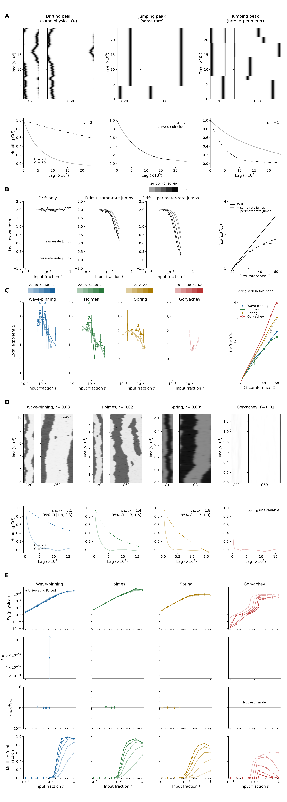

Generated 2026-10-23T10:03:39.273853+00:00. The compact campaign is complete: 260 conditions and 45,696 independent histories (96–384 per condition). Local size exponents resolve in 125/260 neighborhoods. Of the 260 single-condition rates, 128 meet the precision target, 36 exceed it at the seed cap, 8 have insufficient valid bootstrap draws and 88 have no eligible rate. The drift/relocation closure is estimable in 42 conditions; all are within 15% of observed decay. Goryachev has no estimable closure ratio. Missing estimates and cross-method disagreement remain explicit.
Revised manuscript outline · Figure 4 and legend · Supplement · Current main plates 2–4

A. Simulated drifting and relocating peaks on small and large rings. Grayscale kymograph widths follow circumference and time increases upward; each pair shares its declared seed. Ensemble heading autocorrelations below use small-ring solid and large-ring dotted curves. Fixed physical drift, same-rate relocation and perimeter-rate relocation give size exponents 2, 0 and −1, respectively.
B. Simulated mixtures illustrate how relocation erodes a geometric size advantage. Input fraction is f; the illustrative dependences are Dₛ = 8.8f² and λ = 135f⁴, with perimeter-rate relocation multiplying λ by C/40. The decay rate is k(ℓ) = −ln C(ℓ)/ℓ; α is minus the local slope of ln k against ln circumference. Noise tolerance f½ is the first downward crossing of correlation 0.5 at the fixed reference lag. Gray shades encode increasing circumference. Line styles distinguish mixtures in the tolerance-fold panel; its dashed guide is proportional to circumference.
C. Local exponents use model hues and light-to-dark circumference ramps. Markers show designed inputs, open markers identify forced conditions, vertical intervals show pointwise 95% uncertainty, and outward triangles mark off-scale values or tails. The right panel shows tolerance folds with model-specific markers; Spring circumference is multiplied by 20. 125/260 neighborhoods resolve; Goryachev contributes 11. Largest-size tolerance folds are Wave-pinning 2.373, Holmes 2.155, Spring 3.088, Goryachev 4.122.
D. Matched first-replicate model histories use the selected designed inputs, with physical widths and shared grayscale activity scales within each model. Black outside ticks identify persistent dominant-region replacements. The ensemble curves below include end-to-end exponents and 95% intervals where estimable. At every selected input, small-ring reference-lag correlation is below 0.4 and large-ring correlation exceeds 0.6; the enlarged rings retain heading longer.
E. Columns distinguish models; rows show physical drift diffusivity, effective replacement rate, predicted/observed decay-rate ratio and multiple-front fraction. Circumference uses the same ramps; open markers identify forced conditions. The prediction is (2π/C)²Dₛ + λ(1 − mean cos Δθ), with unity as the ratio reference. Predicted rates lie within 15% of observed rates in 42 of the 42 estimable conditions. Goryachev has no estimable prediction/observation ratio. Undefined values and empirical zeros on logarithmic axes are omitted with reasons recorded. Multiple-front fractions remain descriptive. Time and length retain each model’s native units throughout.
Scientific readme and unexpected results · Preservation receipt